Linear Regression
Last updated on Mar 9, 2022
This chapter follows closely Chapter 3 of An Introduction to Statistical Learning by James, Witten, Tibshirani, Friedman.
# Remove warnings
import warnings
warnings.filterwarnings('ignore')
# Import everything
import pandas as pd
import numpy as np
import seaborn as sns
import statsmodels.api as sm
from sklearn.linear_model import LinearRegression
from numpy.linalg import inv
from numpy.random import normal as rnorm
from statsmodels.stats.outliers_influence import OLSInfluence
# Setup matplotlib for graphs
import matplotlib.pyplot as plt
from mpl_toolkits.mplot3d import axes3d
# Set global parameters
%matplotlib inline
plt.style.use('seaborn-white')
plt.rcParams['lines.linewidth'] = 3
plt.rcParams['figure.figsize'] = (10,6)
plt.rcParams['figure.titlesize'] = 20
plt.rcParams['axes.titlesize'] = 18
plt.rcParams['axes.labelsize'] = 14
plt.rcParams['legend.fontsize'] = 14
You can inspect all the available global parameter options here.
1.1 Simple Linear Regression
First, let’s load the Advertising dataset. It contains information on displays sales (in thousands of units) for a particular product and a list of advertising budgets (in thousands of dollars) for TV, radio, and newspaper media.
We open the dataset using the pandas library which is the library for handling datasets and data analysis in Python.
# Advertisement spending data
advertising = pd.read_csv('data/Advertising.csv', usecols=[1,2,3,4])
Let’s have a look at the content. We can have a glance at the first rows by using the function head.
# Preview of the data
advertising.head()
| TV | Radio | Newspaper | Sales | |
|---|---|---|---|---|
| 0 | 230.1 | 37.8 | 69.2 | 22.1 |
| 1 | 44.5 | 39.3 | 45.1 | 10.4 |
| 2 | 17.2 | 45.9 | 69.3 | 9.3 |
| 3 | 151.5 | 41.3 | 58.5 | 18.5 |
| 4 | 180.8 | 10.8 | 58.4 | 12.9 |
We can have a general overview of the dataset using the function info.
# Overview of all variables
advertising.info()
<class 'pandas.core.frame.DataFrame'>
RangeIndex: 200 entries, 0 to 199
Data columns (total 4 columns):
# Column Non-Null Count Dtype
--- ------ -------------- -----
0 TV 200 non-null float64
1 Radio 200 non-null float64
2 Newspaper 200 non-null float64
3 Sales 200 non-null float64
dtypes: float64(4)
memory usage: 6.4 KB
We can have more information on the single variables using the function describe.
# Summary of all variables
advertising.describe()
| TV | Radio | Newspaper | Sales | |
|---|---|---|---|---|
| count | 200.000000 | 200.000000 | 200.000000 | 200.000000 |
| mean | 147.042500 | 23.264000 | 30.554000 | 14.022500 |
| std | 85.854236 | 14.846809 | 21.778621 | 5.217457 |
| min | 0.700000 | 0.000000 | 0.300000 | 1.600000 |
| 25% | 74.375000 | 9.975000 | 12.750000 | 10.375000 |
| 50% | 149.750000 | 22.900000 | 25.750000 | 12.900000 |
| 75% | 218.825000 | 36.525000 | 45.100000 | 17.400000 |
| max | 296.400000 | 49.600000 | 114.000000 | 27.000000 |
If you just want to call a variable in pandas, you have 3 options:
- use squared brackets as if the varaible was a component of a dictionary
- use or dot subscripts as if the variable was a function of the data
- use the
locfunction (best practice)
# 1. Brackets
advertising['TV']
0 230.1
1 44.5
2 17.2
3 151.5
4 180.8
...
195 38.2
196 94.2
197 177.0
198 283.6
199 232.1
Name: TV, Length: 200, dtype: float64
# 2. Brackets
advertising.TV
0 230.1
1 44.5
2 17.2
3 151.5
4 180.8
...
195 38.2
196 94.2
197 177.0
198 283.6
199 232.1
Name: TV, Length: 200, dtype: float64
# The loc function
advertising.loc[:,'TV']
0 230.1
1 44.5
2 17.2
3 151.5
4 180.8
...
195 38.2
196 94.2
197 177.0
198 283.6
199 232.1
Name: TV, Length: 200, dtype: float64
Note that the loc function is more powerful and is generally used to subset lines and columns.
# Select multiple columns and subset of rows
advertising.loc[0:5,['Sales','TV']]
| Sales | TV | |
|---|---|---|
| 0 | 22.1 | 230.1 |
| 1 | 10.4 | 44.5 |
| 2 | 9.3 | 17.2 |
| 3 | 18.5 | 151.5 |
| 4 | 12.9 | 180.8 |
| 5 | 7.2 | 8.7 |
Suppose we are interested in the (linear) relationship between sales and tv advertisement.
$$ sales ≈ \beta_0 + \beta_1 TV. $$
How are the two two variables related? Visual inspection: scatterplot.
# Figure 3.1
def make_fig_3_1a():
# Init figure
fig, ax = plt.subplots(1,1)
ax.set_title('Figure 3.1');
# Plot scatter and best fit line
sns.regplot(x=advertising.TV, y=advertising.Sales, ax=ax, order=1, ci=None, scatter_kws={'color':'r', 's':20})
ax.set_xlim(-10,310); ax.set_ylim(ymin=0)
ax.legend(['Least Squares Fit','Data']);
make_fig_3_1a()
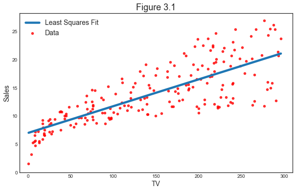
Estimating the Coefficients
How do we estimate the best fit line? Minimize the Residual Sum of Squares (RSS).
First, suppose we have a dataset $\mathcal D = {x_i, y_i}_{i=1}^N$. We define the prediction of $y$ based on $X$ as
$$ \hat y_i = \hat \beta X_i $$
The residuals are the unexplained component of $y$
$$ e_i = y_i - \hat y_i $$
Our objective function (to be minimized) is the Resdual Sum of Squares (RSS):
$$ RSS := \sum_{n=1}^N e_i^2 $$
And the OLS coefficient is defined as its minimizer:
$$ \hat \beta_{OLS} := \arg\min_{\beta} \sum_{n=1}^N e_i^2 = \arg\min_{\beta} \sum_{n=1}^N (y_i - X_i \beta)^2 $$
Let’s use the sklearn library to fit a linear regression model of Sales on TV advertisement.
# Define X and y
X = advertising.TV.values.reshape(-1,1)
y = advertising.Sales.values
# Fit linear regressions
reg = LinearRegression().fit(X,y)
print(reg.intercept_)
print(reg.coef_)
7.0325935491276885
[0.04753664]
We can visualize the residuals as the vertical distances between the data and the prediction line. The objective function RSS is the sum of the squares of the lengths of vertical lines.
# Compute predicted values
y_hat = reg.predict(X)
# Figure 3.1
def make_figure_3_1b():
# Init figure
fig, ax = plt.subplots(1,1)
ax.set_title('Figure 3.1');
# Add residuals
sns.regplot(x=advertising.TV, y=advertising.Sales, ax=ax, order=1, ci=None, scatter_kws={'color':'r', 's':20})
ax.vlines(X, np.minimum(y,y_hat), np.maximum(y,y_hat), linestyle='--', color='k', alpha=0.5, linewidth=1)
plt.legend(['Least Squares Fit','Data','Residuals']);
make_figure_3_1b()
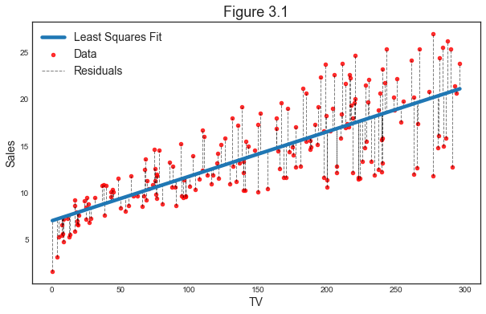
The closed form solution in matrix algebra is $$ \hat \beta_{OLS} = (X’X)^{-1}(X’y) $$
Python has a series of shortcuts to make the syntax less verbose. However, we still need to import the inv function from numpy. In Matlab it would be (X'*X)^{-1}*(X'*y), almost literal.
# Compute OLS coefficient with matrix algebra
beta = inv(X.T @ X) @ X.T @ y
print(beta)
[0.08324961]
Why is the result different?
We are missing one coefficient: the intercept. Our regression now looks like this
# New figure 1
def make_new_figure_1():
# Init figure
fig, ax = plt.subplots(1,1)
fig.suptitle('Role of the Intercept')
# Add new line on the previous plot
sns.regplot(x=advertising.TV, y=advertising.Sales, ax=ax, order=1, ci=None, scatter_kws={'color':'r', 's':10})
ax.plot(X, beta*X, color='g')
plt.xlim(-10,310); plt.ylim(ymin=0);
ax.legend(['With Intercept', 'Without intercept']);
make_new_figure_1()
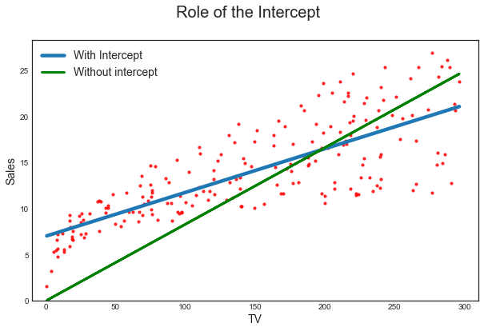
How do we insert an intercept using matrix algebra? We add a column of ones.
$$ X_1 = [\boldsymbol{1}, X] $$
# How to insert intercept? Add constant: column of ones
one = np.ones(np.shape(X))
X1 = np.concatenate([one,X],axis=1)
print(np.shape(X1))
(200, 2)
Now we compute again the coefficients as before.
$$ \hat \beta_{OLS} = (X_1’X_1)^{-1}(X_1’y) $$
# Compute beta OLS with intercept
beta_OLS = inv(X1.T @ X1) @ X1.T @ y
print(beta_OLS)
[7.03259355 0.04753664]
Now we have indeed obtained the same exact coefficients.
What does minimizing the Residual Sum of Squares means in practice? How does the objective function looks like?
from sklearn.preprocessing import scale
# First, scale the data
X = scale(advertising.TV, with_mean=True, with_std=False).reshape(-1,1)
y = advertising.Sales
regr = LinearRegression().fit(X,y)
# Create grid coordinates for plotting
B0 = np.linspace(regr.intercept_-2, regr.intercept_+2, 50)
B1 = np.linspace(regr.coef_-0.02, regr.coef_+0.02, 50)
xx, yy = np.meshgrid(B0, B1, indexing='xy')
Z = np.zeros((B0.size,B1.size))
# Calculate Z-values (RSS) based on grid of coefficients
for (i,j),v in np.ndenumerate(Z):
Z[i,j] =((y - (xx[i,j]+X.ravel()*yy[i,j]))**2).sum()/1000
# Minimized RSS
min_RSS = r'$\beta_0$, $\beta_1$ for minimized RSS'
min_rss = np.sum((regr.intercept_+regr.coef_*X - y.values.reshape(-1,1))**2)/1000
min_rss
2.1025305831313514
# Figure 3.2 - Regression coefficients - RSS
def make_fig_3_2():
fig = plt.figure(figsize=(15,6))
fig.suptitle('RSS - Regression coefficients')
ax1 = fig.add_subplot(121)
ax2 = fig.add_subplot(122, projection='3d')
# Left plot
CS = ax1.contour(xx, yy, Z, cmap=plt.cm.Set1, levels=[2.15, 2.2, 2.3, 2.5, 3])
ax1.scatter(regr.intercept_, regr.coef_[0], c='r', label=min_RSS)
ax1.clabel(CS, inline=True, fontsize=10, fmt='%1.1f')
# Right plot
ax2.plot_surface(xx, yy, Z, rstride=3, cstride=3, alpha=0.3)
ax2.contour(xx, yy, Z, zdir='z', offset=Z.min(), cmap=plt.cm.Set1,
alpha=0.4, levels=[2.15, 2.2, 2.3, 2.5, 3])
ax2.scatter3D(regr.intercept_, regr.coef_[0], min_rss, c='r', label=min_RSS)
ax2.set_zlabel('RSS')
ax2.set_zlim(Z.min(),Z.max())
ax2.set_ylim(0.02,0.07)
# settings common to both plots
for ax in fig.axes:
ax.set_xlabel(r'$\beta_0$')
ax.set_ylabel(r'$\beta_1$')
ax.set_yticks([0.03,0.04,0.05,0.06])
ax.legend()
make_fig_3_2()
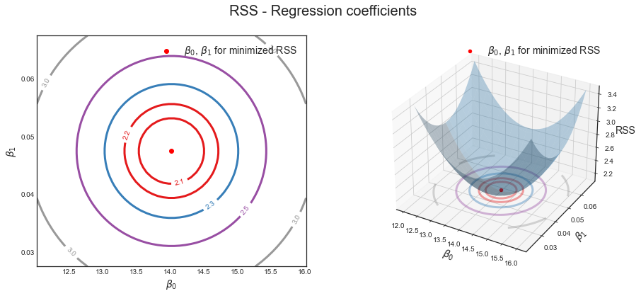
Assessing the Accuracy of the Coefficient Estimates
How accurate is our regression fit? Suppose we were drawing different (small) samples from the same data generating process, for example
$$ y_i = 2 + 3x_i + \varepsilon_i $$
where $x_i \sim N(0,1)$ and $\varepsilon \sim N(0,3)$.
# Init
N = 30; # Sample size
K = 100; # Number of simulations
beta_hat = np.zeros((2,K))
x = np.linspace(-4,4,N)
# Set seed
np.random.seed(1)
# K simulations
for i in range(K):
# Simulate data
x1 = np.random.normal(0,1,N).reshape([-1,1])
X = np.concatenate([np.ones(np.shape(x1)), x1], axis=1)
epsilon = np.random.normal(0,5,N)
beta0 = [2,3]
y = X @ beta0 + epsilon
# Estimate coefficients
beta_hat[:,i] = inv(X.T @ X) @ X.T @ y
# new figure 2
def make_new_fig_2():
# Init figure
fig, ax = plt.subplots(1,1)
for i in range(K):
# Plot line
ax.plot(x, beta_hat[0,i] + x*beta_hat[1,i], color='blue', alpha=0.2, linewidth=1)
if i==K-1:
ax.plot(x, beta_hat[0,i] + x*beta_hat[1,i], color='blue', alpha=0.2, linewidth=1, label='Estimated Lines')
# Plot true line
ax.plot(x, 2 + 3*x, color='red', linewidth=3, label='True Line');
ax.set_xlabel('X'); ax.set_ylabel('Y'); ax.legend();
ax.set_xlim(-4,4);
make_new_fig_2()
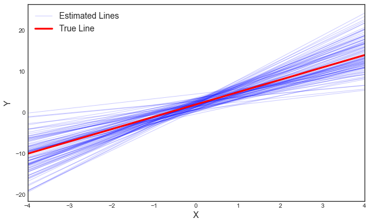
The regplot command lets us automatically draw confidence intervals. Let’s draw the last simulated dataset with conficence intervals.
fig, ax = plt.subplots(1,1)
# Plot last simulation scatterplot with confidence interval
sns.regplot(x=x1, y=y, ax=ax, order=1, scatter_kws={'color':'r', 's':20});
ax.set_xlabel('X'); ax.set_ylabel('Y');
ax.legend(['Best fit','Data', 'Confidence Intervals']);
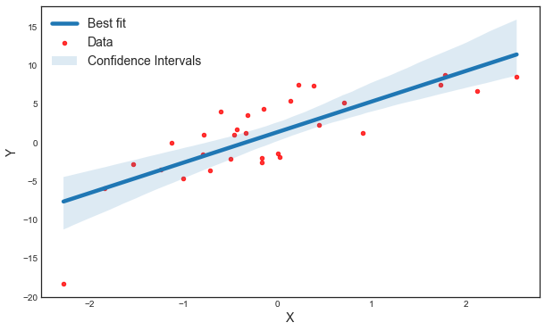
As we can see, depending on the sample, we get a different estimate of the linear relationship between $x$ and $y$. However, there estimates are on average correct. Indeed, we can visualize their distribution.
# Plot distribution of coefficients
plot = sns.jointplot(x=beta_hat[0,:], y=beta_hat[1,:], color='red', edgecolor="white");
plot.ax_joint.axvline(x=2);
plot.ax_joint.axhline(y=3);
plot.set_axis_labels('beta_0', 'beta_1');
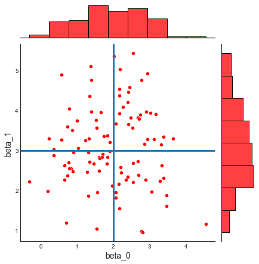
How do we compute confidence intervals by hand?
$$ Var(\hat \beta_{OLS}) = \sigma^2 (X’X)^{-1} $$
where $\sigma^2 = Var(\varepsilon)$. Since we do not know $Var(\varepsilon)$, we estimate it as $Var(e)$.
$$ \hat Var(\hat \beta_{OLS}) = \hat \sigma^2 (X’X)^{-1} $$
If we assume the standard errors are normally distributed (or we apply the Central Limit Theorem, assuming $n \to \infty$), a 95% confidence interval for the OLS coefficient takes the form
$$ CI(\hat \beta_{OLS}) = \Big[ \hat \beta_{OLS} - 1.96 \times \hat SE(\hat \beta_{OLS}) \ , \ \hat \beta_{OLS} + 1.96 \times \hat SE(\hat \beta_{OLS}) \Big] $$
where $\hat SE(\hat \beta_{OLS}) = \sqrt{\hat Var(\hat \beta_{OLS})}$.
# Import again X and y from example above
X = advertising.TV.values.reshape(-1,1)
X1 = np.concatenate([np.ones(np.shape(X)), X], axis=1)
y = advertising.Sales.values
# Compute residual variance
X_hat = X1 @ beta_OLS
e = y - X_hat
sigma_hat = np.var(e)
var_beta_OLS = sigma_hat * inv(X1.T @ X1)
# Take elements on the diagonal and square them
std_beta_OLS = [var_beta_OLS[0,0]**.5, var_beta_OLS[1,1]**.5]
print(std_beta_OLS)
[0.4555479737400674, 0.0026771203500466564]
The statsmodels library allows us to produce nice tables with parameter estimates and standard errors.
# Table 3.1 & 3.2
est = sm.OLS.from_formula('Sales ~ TV', advertising).fit()
est.summary().tables[1]
| coef | std err | t | P>|t| | [0.025 | 0.975] | |
|---|---|---|---|---|---|---|
| Intercept | 7.0326 | 0.458 | 15.360 | 0.000 | 6.130 | 7.935 |
| TV | 0.0475 | 0.003 | 17.668 | 0.000 | 0.042 | 0.053 |
Assessing the Accuracy of the Model
What metrics can we use to assess whether the model is a good model, in terms of capturing the relationship between the variables?
First, we can compute our objective function: the Residual Sum of Squares (RSS). Lower values of our objective function imply that we got a better fit.
# RSS with regression coefficients
RSS = sum(e**2)
print(RSS)
2102.530583131351
The problem with RSS as a metric is that it’s hard to compare different regressions since its scale depends on the magnitude of the variables.
One measure of fit that does not depend on the magnitude of the variables is $R^2$: the percentage of our explanatory variable explained by the model
$$ R^2 = 1 - \frac{\text{RSS}}{\text{TSS}} $$
where
$$ TSS = \sum_{i=1}^N (y_i - \bar y)^2 $$
# TSS
TSS = sum( (y-np.mean(y))**2 )
# R2
R2 = 1 - RSS/TSS
print(R2)
0.6118750508500709
Can the $R^2$ metric be negative? When?
2.2 Multiple Linear Regression
What if we have more than one explanatory variable? Spoiler: we already did, but one was a constant.
Let’s have a look at the regression of Sales on Radio and TV advertisement expenditure separately.
# Table 3.3 (1)
est = sm.OLS.from_formula('Sales ~ Radio', advertising).fit()
est.summary().tables[1]
| coef | std err | t | P>|t| | [0.025 | 0.975] | |
|---|---|---|---|---|---|---|
| Intercept | 9.3116 | 0.563 | 16.542 | 0.000 | 8.202 | 10.422 |
| Radio | 0.2025 | 0.020 | 9.921 | 0.000 | 0.162 | 0.243 |
# Table 3.3 (2)
est = sm.OLS.from_formula('Sales ~ Newspaper', advertising).fit()
est.summary().tables[1]
| coef | std err | t | P>|t| | [0.025 | 0.975] | |
|---|---|---|---|---|---|---|
| Intercept | 12.3514 | 0.621 | 19.876 | 0.000 | 11.126 | 13.577 |
| Newspaper | 0.0547 | 0.017 | 3.300 | 0.001 | 0.022 | 0.087 |
It seems that both Radio and Newspapers are positively correlated with Sales. Why don’t we estimate a unique regression with both dependent variables?
Estimating the Regression Coefficients
Suppose now we enrich our previous model adding all different forms of advertisement:
$$ \text{Sales} = \beta_0 + \beta_1 \text{TV} + \beta_2 \text{Radio} + \beta_3 \text{Newspaper} + \varepsilon $$
We estimate it using the statsmodels ols library.
# Table 3.4
est = sm.OLS.from_formula('Sales ~ TV + Radio + Newspaper', advertising).fit()
est.summary().tables[1]
| coef | std err | t | P>|t| | [0.025 | 0.975] | |
|---|---|---|---|---|---|---|
| Intercept | 2.9389 | 0.312 | 9.422 | 0.000 | 2.324 | 3.554 |
| TV | 0.0458 | 0.001 | 32.809 | 0.000 | 0.043 | 0.049 |
| Radio | 0.1885 | 0.009 | 21.893 | 0.000 | 0.172 | 0.206 |
| Newspaper | -0.0010 | 0.006 | -0.177 | 0.860 | -0.013 | 0.011 |
Why now it seems that there is no relationship between Sales and Newspaper while the univariate regression told us the opposite?
Let’s explore the correlation between those variables.
# Table 3.5 - Correlation Matrix
advertising.corr()
| TV | Radio | Newspaper | Sales | |
|---|---|---|---|---|
| TV | 1.000000 | 0.054809 | 0.056648 | 0.782224 |
| Radio | 0.054809 | 1.000000 | 0.354104 | 0.576223 |
| Newspaper | 0.056648 | 0.354104 | 1.000000 | 0.228299 |
| Sales | 0.782224 | 0.576223 | 0.228299 | 1.000000 |
Let’s try to inspect the relationship visually. Note that now the linear best fit is going to be 3-dimensional. In order to make it visually accessible, we consider only on TV and Radio advertisement expediture as dependent variables. The best fit will be a plane instead of a line.
# Fit regression
est = sm.OLS.from_formula('Sales ~ Radio + TV', advertising).fit()
print(est.params)
Intercept 2.921100
Radio 0.187994
TV 0.045755
dtype: float64
# Create a coordinate grid
Radio = np.arange(0,50)
TV = np.arange(0,300)
B1, B2 = np.meshgrid(Radio, TV, indexing='xy')
# Compute predicted plane
Z = np.zeros((TV.size, Radio.size))
for (i,j),v in np.ndenumerate(Z):
Z[i,j] =(est.params[0] + B1[i,j]*est.params[1] + B2[i,j]*est.params[2])
# Compute residuals
e = est.predict() - advertising.Sales
# Figure 3.5 - Multiple Linear Regression
def make_fig_3_5():
# Init figure
fig = plt.figure()
ax = axes3d.Axes3D(fig, auto_add_to_figure=False)
fig.add_axes(ax)
fig.suptitle('Figure 3.5');
# Plot best fit plane
ax.plot_surface(B1, B2, Z, color='k', alpha=0.3)
points = ax.scatter3D(advertising.Radio, advertising.TV, advertising.Sales, c=e, cmap="seismic", vmin=-5, vmax=5)
plt.colorbar(points, cax=fig.add_axes([0.9, 0.1, 0.03, 0.8]))
ax.set_xlabel('Radio'); ax.set_xlim(0,50)
ax.set_ylabel('TV'); ax.set_ylim(bottom=0)
ax.set_zlabel('Sales');
ax.view_init(20, 20)
make_fig_3_5()
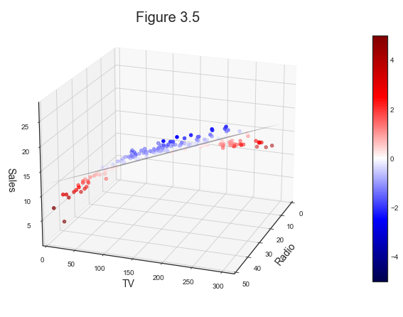
Some Important Questions
How do you check whether the model fit well the data with multiple regressors? statmodels and most regression packages automatically outputs more information about the least squares model.
# Measires of fit
est.summary().tables[0]
| Dep. Variable: | Sales | R-squared: | 0.897 |
|---|---|---|---|
| Model: | OLS | Adj. R-squared: | 0.896 |
| Method: | Least Squares | F-statistic: | 859.6 |
| Date: | Mon, 03 Jan 2022 | Prob (F-statistic): | 4.83e-98 |
| Time: | 18:28:21 | Log-Likelihood: | -386.20 |
| No. Observations: | 200 | AIC: | 778.4 |
| Df Residuals: | 197 | BIC: | 788.3 |
| Df Model: | 2 | ||
| Covariance Type: | nonrobust |
First measure: the F-test. The F-test tries to answe the question “Is There a Relationship Between the Response and Predictors?”
In particular, it tests the following hypothesis
$$ H_1: \text{is at least one coefficient different from zero?} $$
against the null hypothesis
$$ H_0: \beta_0 = \beta_1 = … = 0 $$
This hypothesis test is performed by computing the F-statistic,
$$ F=\frac{(\mathrm{TSS}-\mathrm{RSS}) / p}{\operatorname{RSS} /(n-p-1)} $$
Let’s try to compute it by hand.
# Init
X = advertising[['Radio', 'TV']]
y = advertising.Sales
e = y - est.predict(X)
RSS = np.sum(e**2)
TSS = np.sum((y - np.mean(y))**2)
(n,p) = np.shape(X)
# Compute F
F = ((TSS - RSS)/p) / (RSS/(n-p-1))
print('F = %.4f' % F)
F = 859.6177
A rule of thumb is to reject $H_0$ if $F > 10$.
We can also test that a particular subset of coefficients are equal to zero. In that case, we just substitute the Total Sum of Squares (TSS) with the Residual Sum of Squares under the null.
$$ F=\frac{(\mathrm{RSS_0}-\mathrm{RSS}) / p}{\operatorname{RSS} /(n-p-1)} $$
i.e. we perfome the regression under the null hypothesis and we compute
$$ RSS_0 = \sum_{n=1}^N (y_i - X_i \beta)^2 \quad s.t. \quad H_0 $$
2.3 Other Considerations in the Regression Model
Qualitative Predictors
What if some variables are qualitative instead of quantitative? Let’s change dataset and use the credit dataset.
# Credit ratings dataset
credit = pd.read_csv('data/Credit.csv', usecols=list(range(1,12)))
This dataset contains information on credit ratings, i.e. each person is assigned a Rating score based on his/her own individual characteristics.
Let’s have a look at data types.
# Summary
credit.info()
<class 'pandas.core.frame.DataFrame'>
RangeIndex: 400 entries, 0 to 399
Data columns (total 11 columns):
# Column Non-Null Count Dtype
--- ------ -------------- -----
0 Income 400 non-null float64
1 Limit 400 non-null int64
2 Rating 400 non-null int64
3 Cards 400 non-null int64
4 Age 400 non-null int64
5 Education 400 non-null int64
6 Gender 400 non-null object
7 Student 400 non-null object
8 Married 400 non-null object
9 Ethnicity 400 non-null object
10 Balance 400 non-null int64
dtypes: float64(1), int64(6), object(4)
memory usage: 34.5+ KB
As we can see, some variables like Gender, Student or Married are not numeric.
We can have a closer look at what these variables look like.
# Look at data
credit.head()
| Income | Limit | Rating | Cards | Age | Education | Gender | Student | Married | Ethnicity | Balance | |
|---|---|---|---|---|---|---|---|---|---|---|---|
| 0 | 14.891 | 3606 | 283 | 2 | 34 | 11 | Male | No | Yes | Caucasian | 333 |
| 1 | 106.025 | 6645 | 483 | 3 | 82 | 15 | Female | Yes | Yes | Asian | 903 |
| 2 | 104.593 | 7075 | 514 | 4 | 71 | 11 | Male | No | No | Asian | 580 |
| 3 | 148.924 | 9504 | 681 | 3 | 36 | 11 | Female | No | No | Asian | 964 |
| 4 | 55.882 | 4897 | 357 | 2 | 68 | 16 | Male | No | Yes | Caucasian | 331 |
Let’s consider the variable Student. From a quick inspection it looks like it’s a binary Yes/No variable. Let’s check by listing all its values.
# What values does the Student variable take?
credit['Student'].unique()
array(['No', 'Yes'], dtype=object)
What happens if you pass a binary varaible to statsmodel? It automatically generates a dummy out of it.
# Table 3.7
est = sm.OLS.from_formula('Balance ~ Student', credit).fit()
est.summary().tables[1]
| coef | std err | t | P>|t| | [0.025 | 0.975] | |
|---|---|---|---|---|---|---|
| Intercept | 480.3694 | 23.434 | 20.499 | 0.000 | 434.300 | 526.439 |
| Student[T.Yes] | 396.4556 | 74.104 | 5.350 | 0.000 | 250.771 | 542.140 |
If a variable takes more than one value, statsmodel automatically generates a uniqe dummy for each level (-1).
# Table 3.8
est = sm.OLS.from_formula('Balance ~ Ethnicity', credit).fit()
est.summary().tables[1]
| coef | std err | t | P>|t| | [0.025 | 0.975] | |
|---|---|---|---|---|---|---|
| Intercept | 531.0000 | 46.319 | 11.464 | 0.000 | 439.939 | 622.061 |
| Ethnicity[T.Asian] | -18.6863 | 65.021 | -0.287 | 0.774 | -146.515 | 109.142 |
| Ethnicity[T.Caucasian] | -12.5025 | 56.681 | -0.221 | 0.826 | -123.935 | 98.930 |
Relaxing the Additive Assumption
We have seen that both TV and Radio advertisement are positively associated with Sales. What if there is a synergy? For example it might be that if someone sees an ad both on TV and on the radio, s/he is much more likely to buy the product.
Consider the following model
$$ \text{Sales} ≈ \beta_0 + \beta_1 \text{TV} + \beta_2 \text{Radio} + \beta_3 \text{TV} \times \text{Radio} $$
which can be rewritten as
$$ \text{Sales} ≈ \beta_0 + (\beta_1 + \beta_3 \text{Radio}) \times \text{TV} + \beta_2 \text{Radio} $$
Let’s estimate the linear regression model, with the intercept.
# Table 3.9 - Interaction Variables
est = sm.OLS.from_formula('Sales ~ TV + Radio + TV*Radio', advertising).fit()
est.summary().tables[1]
| coef | std err | t | P>|t| | [0.025 | 0.975] | |
|---|---|---|---|---|---|---|
| Intercept | 6.7502 | 0.248 | 27.233 | 0.000 | 6.261 | 7.239 |
| TV | 0.0191 | 0.002 | 12.699 | 0.000 | 0.016 | 0.022 |
| Radio | 0.0289 | 0.009 | 3.241 | 0.001 | 0.011 | 0.046 |
| TV:Radio | 0.0011 | 5.24e-05 | 20.727 | 0.000 | 0.001 | 0.001 |
A positive and significant interaction term indicates a hint of a sinergy effect.
Heterogeneous Effects
We can do interactions with qualitative variables as well. Conside the credit rating dataset.
What if Balance depends by Income differently, depending on whether one is a Student or not?
Consider the following model:
$$ \text{Balance} ≈ \beta_0 + \beta_1 \text{Income} + \beta_2 \text{Student} + \beta_3 \text{Income} \times \text{Student} $$
The last coefficient $\beta_3$ should tell us how much Balance increases in Income for Students with respect to non-Students.
Indeed, we can decompose the regression in the following equivalent way:
$$ \text{Balance} ≈ \beta_0 + \beta_1 \text{Income} + \beta_2 \text{Student} + \beta_3 \text{Income} \times \text{Student} $$
which can be interpreted in the following way since Student is a binary variable
-
If the person is not a student $$ \text{Balance} ≈ \beta_0 + \beta_1 \text{Income} $$
-
If the person is a student $$ \text{Balance} ≈ (\beta_0 + \beta_2) + (\beta_1 + \beta_3 ) \text{Income} $$
We are allowing not only for a different intercept for Students, $\beta_0 \to \beta_0 + \beta_2$, but also for a different impact of Income, $\beta_1 \to \beta_1 + \beta_3$.
We can visually inspect the distribution of Income across the two groups.
# Divide data into students and non-students
x_student = credit.loc[credit.Student=='Yes','Income']
y_student = credit.loc[credit.Student=='Yes','Balance']
x_nonstudent = credit.loc[credit.Student=='No','Income']
y_nonstudent = credit.loc[credit.Student=='No','Balance']
# Make figure 3.8
def make_fig_3_8():
# Init figure
fig, ax = plt.subplots(1,1)
fig.suptitle('Figure 3.8')
# Relationship betweeen income and balance for students and non-students
ax.scatter(x=x_nonstudent, y=y_nonstudent, facecolors='None', edgecolors='k', alpha=0.5);
ax.scatter(x=x_student, y=y_student, facecolors='r', edgecolors='r', alpha=0.7);
ax.legend(['non-student', 'student']);
ax.set_xlabel('Income'); ax.set_ylabel('Balance');
make_fig_3_8()
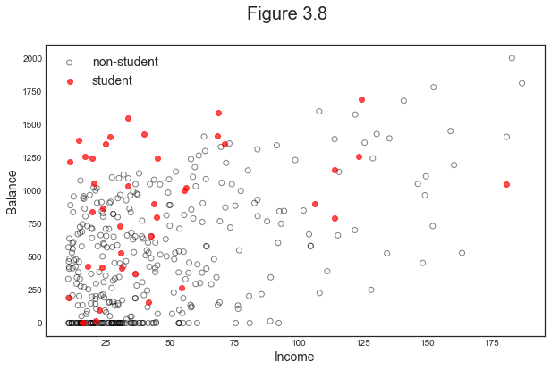
It is hard from the scatterplot to see whether there is a different relationship between income and balance for students and non-students.
Let’s fit two separate regressions.
# Interaction between qualitative and quantative variables
est1 = sm.OLS.from_formula('Balance ~ Income + Student', credit).fit()
reg1 = est1.params
est2 = sm.OLS.from_formula('Balance ~ Income + Student + Income*Student', credit).fit()
reg2 = est2.params
print('Regression 1 - without interaction term')
print(reg1)
print('\nRegression 2 - with interaction term')
print(reg2)
Regression 1 - without interaction term
Intercept 211.142964
Student[T.Yes] 382.670539
Income 5.984336
dtype: float64
Regression 2 - with interaction term
Intercept 200.623153
Student[T.Yes] 476.675843
Income 6.218169
Income:Student[T.Yes] -1.999151
dtype: float64
Without the interaction term, the two lines have different levels but the same slope. Introducing an interaction term allows the two groups to have different responses to Income.
We can visualize the relationship in a graph.
# Income (x-axis)
income = np.linspace(0,150)
# Balance without interaction term (y-axis)
student1 = np.linspace(reg1['Intercept']+reg1['Student[T.Yes]'],
reg1['Intercept']+reg1['Student[T.Yes]']+150*reg1['Income'])
non_student1 = np.linspace(reg1['Intercept'], reg1['Intercept']+150*reg1['Income'])
# Balance with iteraction term (y-axis)
student2 = np.linspace(reg2['Intercept']+reg2['Student[T.Yes]'],
reg2['Intercept']+reg2['Student[T.Yes]']+
150*(reg2['Income']+reg2['Income:Student[T.Yes]']))
non_student2 = np.linspace(reg2['Intercept'], reg2['Intercept']+150*reg2['Income'])
# Figure 3.7
def make_fig_3_7():
fig, (ax1,ax2) = plt.subplots(1,2, figsize=(12,5))
fig.suptitle('Figure 3.7')
# Plot best fit with and without interaction
ax1.plot(income, student1, 'r', income, non_student1, 'k')
ax2.plot(income, student2, 'r', income, non_student2, 'k')
titles = ['Dummy', 'Dummy + Interaction']
for ax, t in zip(fig.axes, titles):
ax.legend(['student', 'non-student'], loc=2)
ax.set_xlabel('Income')
ax.set_ylabel('Balance')
ax.set_ylim(ymax=1550)
ax.set_title(t)
make_fig_3_7()
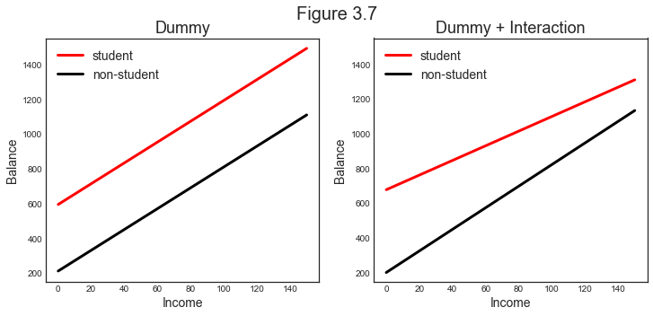
Non-Linear Relationships
What if we allow for further non-linearities? Let’s change dataset again and use the car dataset.
# Automobile dataset (dropping missing values)
auto = pd.read_csv('data/Auto.csv', na_values='?').dropna()
This dataset contains information of a wide variety of car models.
auto.head()
| mpg | cylinders | displacement | horsepower | weight | acceleration | year | origin | name | |
|---|---|---|---|---|---|---|---|---|---|
| 0 | 18.0 | 8 | 307.0 | 130 | 3504 | 12.0 | 70 | 1 | chevrolet chevelle malibu |
| 1 | 15.0 | 8 | 350.0 | 165 | 3693 | 11.5 | 70 | 1 | buick skylark 320 |
| 2 | 18.0 | 8 | 318.0 | 150 | 3436 | 11.0 | 70 | 1 | plymouth satellite |
| 3 | 16.0 | 8 | 304.0 | 150 | 3433 | 12.0 | 70 | 1 | amc rebel sst |
| 4 | 17.0 | 8 | 302.0 | 140 | 3449 | 10.5 | 70 | 1 | ford torino |
Suppose we wanted to understand which car caracteristics are correlated with higher efficiency, i.e. mpg (miles per gallon).
Consider in particular the relationship between mpg and horsepower. It might be a highly non-linear relationship.
$$ \text{mpg} ≈ \beta_0 + \beta_1 \text{horsepower} + \beta_2 \text{horsepower}^2 + … ??? $$
How many terms should we include?
Let’s look at the data to understand if it naturally suggests non-linearities.
fig, ax = plt.subplots(1,1)
# Plot polinomials of different degree
plt.scatter(x=auto.horsepower, y=auto.mpg, facecolors='None', edgecolors='k', alpha=.3)
plt.ylim(5,55); plt.xlim(40,240);
plt.xlabel('horsepower'); plt.ylabel('mpg');
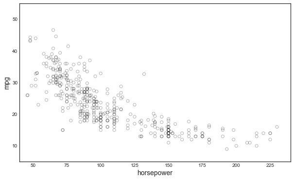
The relationship looks non-linear but in which way exactly? Let’s try to fit polinomials of different degrees.
def make_fig_38():
# Figure 3.8
fig, ax = plt.subplots(1,1)
ax.set_title('Figure 3.8')
# Plot polinomials of different degree
plt.scatter(x=auto.horsepower, y=auto.mpg, facecolors='None', edgecolors='k', alpha=.3)
sns.regplot(x=auto.horsepower, y=auto.mpg, ci=None, label='Linear', scatter=False, color='orange')
sns.regplot(x=auto.horsepower, y=auto.mpg, ci=None, label='Degree 2', order=2, scatter=False, color='lightblue')
sns.regplot(x=auto.horsepower, y=auto.mpg, ci=None, label='Degree 5', order=5, scatter=False, color='g')
plt.legend()
plt.ylim(5,55)
plt.xlim(40,240);
make_fig_38()
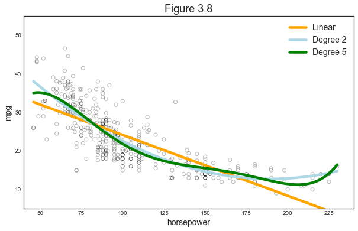
As we can see, the tails are highly unstable depending on the specification.
Let’s add a quadratic term
# Table 3.10
auto['horsepower2'] = auto.horsepower**2
auto.head(3)
| mpg | cylinders | displacement | horsepower | weight | acceleration | year | origin | name | horsepower2 | |
|---|---|---|---|---|---|---|---|---|---|---|
| 0 | 18.0 | 8 | 307.0 | 130 | 3504 | 12.0 | 70 | 1 | chevrolet chevelle malibu | 16900 |
| 1 | 15.0 | 8 | 350.0 | 165 | 3693 | 11.5 | 70 | 1 | buick skylark 320 | 27225 |
| 2 | 18.0 | 8 | 318.0 | 150 | 3436 | 11.0 | 70 | 1 | plymouth satellite | 22500 |
How does the regression change?
est = sm.OLS.from_formula('mpg ~ horsepower + horsepower2', auto).fit()
est.summary().tables[1]
| coef | std err | t | P>|t| | [0.025 | 0.975] | |
|---|---|---|---|---|---|---|
| Intercept | 56.9001 | 1.800 | 31.604 | 0.000 | 53.360 | 60.440 |
| horsepower | -0.4662 | 0.031 | -14.978 | 0.000 | -0.527 | -0.405 |
| horsepower2 | 0.0012 | 0.000 | 10.080 | 0.000 | 0.001 | 0.001 |
Non-Linearities
How can we assess if there are non-linearities and of which kind? We can look at the residuals.
If the residuals show some kind of pattern, probably we could have fit the line better. Moreover, we can use the pattern itself to understand how.
# Linear fit
X = auto.horsepower.values.reshape(-1,1)
y = auto.mpg
regr = LinearRegression().fit(X, y)
auto['pred1'] = regr.predict(X)
auto['resid1'] = auto.mpg - auto.pred1
# Quadratic fit
X2 = auto[['horsepower', 'horsepower2']]
regr.fit(X2, y)
auto['pred2'] = regr.predict(X2)
auto['resid2'] = auto.mpg - auto.pred2
# Figure 3.9
def make_fig_39():
fig, (ax1,ax2) = plt.subplots(1,2, figsize=(12,5))
fig.suptitle('Figure 3.9')
# Left plot
sns.regplot(x=auto.pred1, y=auto.resid1, lowess=True,
ax=ax1, line_kws={'color':'r', 'lw':1},
scatter_kws={'facecolors':'None', 'edgecolors':'k', 'alpha':0.5})
ax1.hlines(0,xmin=ax1.xaxis.get_data_interval()[0],
xmax=ax1.xaxis.get_data_interval()[1], linestyles='dotted')
ax1.set_title('Residual Plot for Linear Fit')
# Right plot
sns.regplot(x=auto.pred2, y=auto.resid2, lowess=True,
line_kws={'color':'r', 'lw':1}, ax=ax2,
scatter_kws={'facecolors':'None', 'edgecolors':'k', 'alpha':0.5})
ax2.hlines(0,xmin=ax2.xaxis.get_data_interval()[0],
xmax=ax2.xaxis.get_data_interval()[1], linestyles='dotted')
ax2.set_title('Residual Plot for Quadratic Fit')
for ax in fig.axes:
ax.set_xlabel('Fitted values')
ax.set_ylabel('Residuals')
make_fig_39()
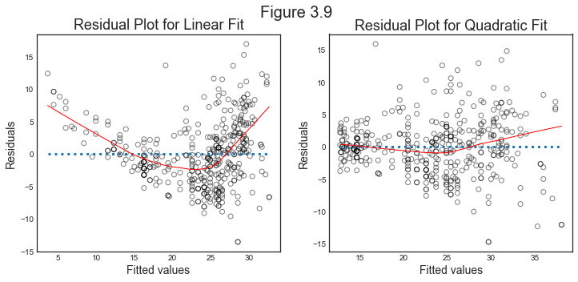
It looks like the residuals from the linear fit (on the left) exibit a pattern:
- positive values at the tails
- negative values in the center
This suggests a quadratic fit. Indeed, the residuals when we include horsepower^2 (on the right) seem more uniformly centered around zero.
Outliers
Observations with high residuals have a good chance of being highly influentials. However, they do not have to be.
Let’s use the following data generating process:
- $X \sim N(0,1)$
- $\varepsilon \sim N(0,0.5)$
- $\beta_0 = 3$
- $y = \beta_0 X + \varepsilon$
np.random.seed(1)
# Generate random y
n = 50
X = rnorm(1,1,(n,1))
e = rnorm(0,0.5,(n,1))
b0 = 3
y = X*b0 + e
Now let’s change observation 20 so that it becomes an outlier, i.e. it has a high residual.
# Generate outlier
X[20] = 1
y[20] = 7
# Short regression without observation number 41
X_small = np.delete(X, 20)
y_small = np.delete(y, 20)
Let’s now plot the data and the residuals
# Figure 3.12
def make_fig_3_12():
# Init figure
fig, (ax1,ax2) = plt.subplots(1,2, figsize=(12,5))
fig.suptitle('Figure 3.12')
# Plot 1
ax1.scatter(x=X, y=y, facecolors='None', edgecolors='k', alpha=.5)
sns.regplot(x=X, y=y, ax=ax1, order=1, ci=None, scatter=False, line_kws={'color':'r', 'lw':1})
sns.regplot(x=X_small, y=y_small, ax=ax1, order=1, ci=None, scatter=False, line_kws={'color':'b', 'lw':1})
ax1.set_xlabel('X'); ax1.set_ylabel('Y');
ax1.legend(['With obs. 20', 'Without obs. 20'], fontsize=12);
# Hihglight outliers
ax1.scatter(x=X[20], y=y[20], facecolors='None', edgecolors='r', alpha=1)
ax1.annotate("20", (1.1, 7), color='r')
# Compute fitted values and residuals
r = regr.fit(X, y)
y_hat = r.predict(X)
e = np.abs(y - y_hat)
# Plot 2
ax2.scatter(x=y_hat, y=e, facecolors='None', edgecolors='k', alpha=.5)
ax2.set_xlabel('Fitted Values'); ax2.set_ylabel('Residuals');
ax2.hlines(0,xmin=ax2.xaxis.get_data_interval()[0],
xmax=ax2.xaxis.get_data_interval()[1], linestyles='dotted',color='k')
# Highlight outlier
ax2.scatter(x=y_hat[20], y=e[20], facecolors='None', edgecolors='r', alpha=1)
ax2.annotate("20", (2.2, 3.6), color='r');
make_fig_3_12()
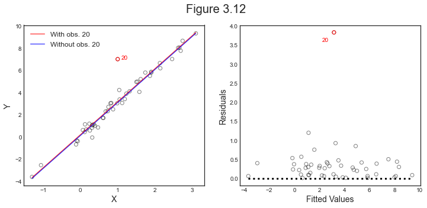
High Leverage Points
A better concept of “influential observation” is the Leverage, which represents how much an observation is distant from the others in terms of observables.
The leverage formula of observation $i$ is
$$ h_i = x_i (X’ X)^{-1} x_i' $$
However, leverage alone is not necessarily enough for an observation to being highly influential.
Let’s modify observation 41 so that it has a high leverage.
# Generate observation with high leverage
X[41] = 4
y[41] = 12
# Short regression without observation number 41
X_small = np.delete(X_small, 41)
y_small = np.delete(y_small, 41)
# Compute leverage
H = X @ inv(X.T @ X) @ X.T
h = np.diagonal(H)
# Compute fitted values and residuals
y_hat = X @ inv(X.T @ X) @ X.T @ y
e = np.abs(y - y_hat)
What happens now that we have added an observation with high leverage? How does the levarage look like?
# Figure 3.13
def make_fig_3_13():
# Init figure
fig, (ax1,ax2) = plt.subplots(1,2, figsize=(12,5))
fig.suptitle('Figure 3.12')
# Plot 1
ax1.scatter(x=X, y=y, facecolors='None', edgecolors='k', alpha=.5)
ax1.scatter(x=X[[20,41]], y=y[[20,41]], facecolors='None', edgecolors='r', alpha=1)
sns.regplot(x=X, y=y, ax=ax1, order=1, ci=None, scatter=False, line_kws={'color':'r', 'lw':1})
sns.regplot(x=X_small, y=y_small, ax=ax1, order=1, ci=None, scatter=False, line_kws={'color':'b', 'lw':1})
ax1.set_xlabel('X'); ax1.set_ylabel('Y'); ax1.axis(xmax=4.5);
ax1.legend(['With obs. 20,41', 'Without obs. 20,41']);
# Highlight points
ax1.annotate("20", (1.1, 7), color='r')
ax1.annotate("41", (3.6, 12), color='r');
# Plot 2
ax2.scatter(x=h, y=e, facecolors='None', edgecolors='k', alpha=.5)
ax2.set_xlabel('Leverage'); ax2.set_ylabel('Residuals');
ax2.hlines(0,xmin=ax2.xaxis.get_data_interval()[0],
xmax=ax2.xaxis.get_data_interval()[1], linestyles='dotted',color='k')
# Highlight outlier
ax2.scatter(x=h[[20,41]], y=e[[20,41]], facecolors='None', edgecolors='r', alpha=1);
# Highlight points
ax2.annotate("20", (0, 3.7), color='r')
ax2.annotate("41", (0.14, 0.4), color='r');
make_fig_3_13()
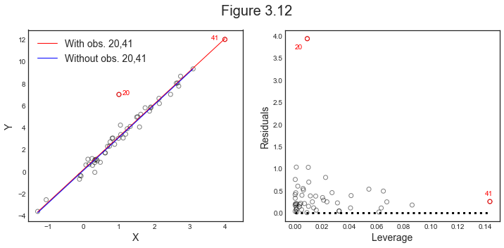
Influential Observations
As we have seen, being an outliers or having high leverage alone might be not enough to conclude that an observation is influential.
What really matters is a combination of both: observations with high leverage and high residuals, i.e. observations that are not only different in terms of observables (high leverage) but are also different in terms of their relationship between observables and dependent variable (high residual).
Let’s now modify observation 7 so that it is an outlier and has high leverage.
# Generate outlier with high leverage
X[7] = 4
y[7] = 7
# Short regression without observation number 41
X_small = np.delete(X, 7)
y_small = np.delete(y, 7)
# Compute leverage
H = X @ inv(X.T @ X) @ X.T
h = np.diagonal(H)
# Compute fitted values and residuals
r = regr.fit(X, y)
y_hat = r.predict(X)
e = np.abs(y - y_hat)
Now the best linear fit line has noticeably moved.
def make_fig_extra_3():
fig, (ax1,ax2) = plt.subplots(1,2, figsize=(12,5))
# Plot 1
ax1.scatter(x=X, y=y, facecolors='None', edgecolors='k', alpha=.5)
ax1.scatter(x=X[[7,20,41]], y=y[[7,20,41]], facecolors='None', edgecolors='r', alpha=1)
sns.regplot(x=X, y=y, ax=ax1, order=1, ci=None, scatter=False, line_kws={'color':'r', 'lw':1})
sns.regplot(x=X_small, y=y_small, ax=ax1, order=1, ci=None, scatter=False, line_kws={'color':'b', 'lw':1})
ax1.set_xlabel('X'); ax1.set_ylabel('Y'); ax1.axis(xmax=4.5);
ax1.legend(['With obs. 7,20,41', 'Without obs. 7,20,41']);
# Highlight points
ax1.annotate("7", (3.7, 7), color='r')
ax1.annotate("20", (1.15, 7.05), color='r')
ax1.annotate("41", (3.6, 12), color='r');
# Plot 2
ax2.scatter(x=h, y=e, facecolors='None', edgecolors='k', alpha=.5)
ax2.set_xlabel('Leverage'); ax2.set_ylabel('Residuals');
ax2.hlines(0,xmin=ax2.xaxis.get_data_interval()[0],
xmax=ax2.xaxis.get_data_interval()[1], linestyles='dotted',color='k')
# Highlight outlier
ax2.scatter(x=h[[7,20,41]], y=e[[7,20,41]], facecolors='None', edgecolors='r', alpha=1);
# Highlight points
ax2.annotate("7", (0.12, 4.0), color='r');
ax2.annotate("20", (0, 3.8), color='r')
ax2.annotate("41", (0.12, 0.9), color='r');
make_fig_extra_3()
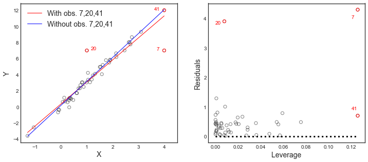
Collinearity
Collinearity is the situation in which two dependent varaibles are higly correlated with each other. Algebraically, this is a problem because the $X’X$ matrix becomes almost-non-invertible.
Let’s have a look at the ratings dataset.
# Inspect dataset
sns.pairplot(credit[['Age', 'Balance', 'Limit', 'Rating']], height=1.8);
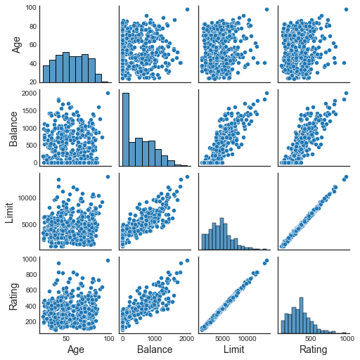
If we zoom into the variable Limit, we see that for example it is not very correlated with Age but is very correlated with Rating.
# Figure 3.14
def make_fig_3_14():
# Init figure
fig, (ax1,ax2) = plt.subplots(1,2, figsize=(12,5))
fig.suptitle('Figure 3.14')
# Left plot
ax1.scatter(credit.Limit, credit.Age, facecolor='None', edgecolor='brown')
ax1.set_ylabel('Age')
# Right plot
ax2.scatter(credit.Limit, credit.Rating, facecolor='None', edgecolor='brown')
ax2.set_ylabel('Rating')
for ax in fig.axes:
ax.set_xlabel('Limit')
ax.set_xticks([2000,4000,6000,8000,12000])
make_fig_3_14()
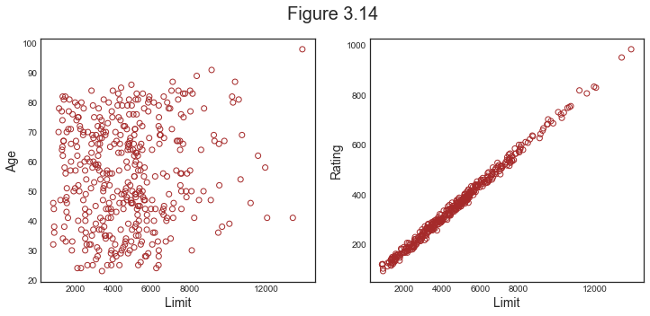
If we regress Balance on Limit and Age, the coefficient of Limit is positive and highly significant.
# Regress balance on limit and age
reg1 = sm.OLS.from_formula('Balance ~ Limit + Age', credit).fit()
reg1.summary().tables[1]
| coef | std err | t | P>|t| | [0.025 | 0.975] | |
|---|---|---|---|---|---|---|
| Intercept | -173.4109 | 43.828 | -3.957 | 0.000 | -259.576 | -87.246 |
| Limit | 0.1734 | 0.005 | 34.496 | 0.000 | 0.163 | 0.183 |
| Age | -2.2915 | 0.672 | -3.407 | 0.001 | -3.614 | -0.969 |
However, if we regress Balance on Limit and Rating, the coefficient of Limit is now not significant anymore.
# Regress balance on limit and rating
reg2 = sm.OLS.from_formula('Balance ~ Limit + Rating', credit).fit()
reg2.summary().tables[1]
| coef | std err | t | P>|t| | [0.025 | 0.975] | |
|---|---|---|---|---|---|---|
| Intercept | -377.5368 | 45.254 | -8.343 | 0.000 | -466.505 | -288.569 |
| Limit | 0.0245 | 0.064 | 0.384 | 0.701 | -0.101 | 0.150 |
| Rating | 2.2017 | 0.952 | 2.312 | 0.021 | 0.330 | 4.074 |
Looking at the objective function, the Residual Sum of Squares, helps understanding what is the problem.
# First scale variables
y = credit.Balance
regr1 = LinearRegression().fit(scale(credit[['Age', 'Limit']].astype('float'), with_std=False), y)
regr2 = LinearRegression().fit(scale(credit[['Rating', 'Limit']], with_std=False), y)
# Create grid coordinates for plotting
B_Age = np.linspace(regr1.coef_[0]-3, regr1.coef_[0]+3, 100)
B_Limit = np.linspace(regr1.coef_[1]-0.02, regr1.coef_[1]+0.02, 100)
B_Rating = np.linspace(regr2.coef_[0]-3, regr2.coef_[0]+3, 100)
B_Limit2 = np.linspace(regr2.coef_[1]-0.2, regr2.coef_[1]+0.2, 100)
X1, Y1 = np.meshgrid(B_Limit, B_Age, indexing='xy')
X2, Y2 = np.meshgrid(B_Limit2, B_Rating, indexing='xy')
Z1 = np.zeros((B_Age.size,B_Limit.size))
Z2 = np.zeros((B_Rating.size,B_Limit2.size))
Limit_scaled = scale(credit.Limit.astype('float'), with_std=False)
Age_scaled = scale(credit.Age.astype('float'), with_std=False)
Rating_scaled = scale(credit.Rating.astype('float'), with_std=False)
# Calculate Z-values (RSS) based on grid of coefficients
for (i,j),v in np.ndenumerate(Z1):
Z1[i,j] =((y - (regr1.intercept_ + X1[i,j]*Limit_scaled +
Y1[i,j]*Age_scaled))**2).sum()/1000000
for (i,j),v in np.ndenumerate(Z2):
Z2[i,j] =((y - (regr2.intercept_ + X2[i,j]*Limit_scaled +
Y2[i,j]*Rating_scaled))**2).sum()/1000000
# Figure 3.15
def make_fig_3_15():
# Init figure
fig, (ax1,ax2) = plt.subplots(1,2, figsize=(12,5))
fig.suptitle('Figure 3.15')
# Minimum
min_RSS = r'$\beta_0$, $\beta_1$ for minimized RSS'
# Left plot
CS = ax1.contour(X1, Y1, Z1, cmap=plt.cm.Set1, levels=[21.25, 21.5, 21.8])
ax1.scatter(reg1.params[1], reg1.params[2], c='r', label=min_RSS)
ax1.clabel(CS, inline=True, fontsize=10, fmt='%1.1f')
ax1.set_ylabel(r'$\beta_{Age}$')
# Right plot
CS = ax2.contour(X2, Y2, Z2, cmap=plt.cm.Set1, levels=[21.5, 21.8])
ax2.scatter(reg2.params[1], reg2.params[2], c='r', label=min_RSS)
ax2.clabel(CS, inline=True, fontsize=10, fmt='%1.1f')
ax2.set_ylabel(r'$\beta_{Rating}$')
#ax2.set_xticks([-0.1, 0, 0.1, 0.2])
for ax in fig.axes:
ax.set_xlabel(r'$\beta_{Limit}$')
ax.legend()
make_fig_3_15()
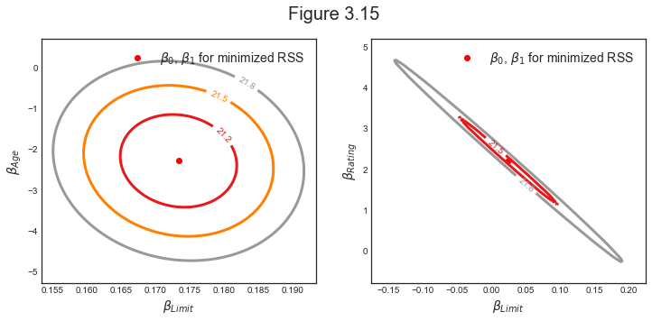
As we can see, in the left plot the minimum is much better defined than in the right plot.